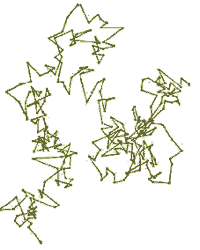
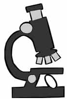
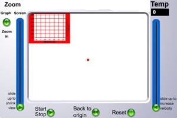

Understanding diffusion |
| An atomic view: Liquids are liquid
because the molecules are freer to move with respect to their neighbors,
but they still interact with one another.
As the temperature rises, the average speed at which the molecules are moving increases. When a molecule's energy is sufficient break the interactions with its neighbors, it can escape from liquid phase - it is transformed into a gas. In a gas, there are essentially no interaction between molecules. |
|  | Within a cell, the bulk of the molecular movement is driven by diffusion. Diffusion is the movement of molecules or particles as a result of random collisions with neighboring molecules. We can see the effects of these collisions in a visible phenomena known Brownian motion. In 1827, the English botanist Robert Brown watched the jerky motion of pollen grains in water -- they moved in a distinctive pattern known as a random walk. |
What drives these movements? In 1905, Albert Einstein published a paper that explained these motions in terms of molecular collisions between the visible particles with the invisible solvent molecules. Because of this constant and random bombardment, sometimes a particle is pushed one way, sometimes another. Smaller particles move more than larger ones and motions increase with increasing temperature. |
|  | The vScope is a virtual microscope with a temperature-controlled stage. Temperature is proportional to the average velocity at which the solvent molecules move. where k is a constant, m is
the mass of the particles, v is their velocity and the bar indicates
the average
of all particles. |
You may recognize the 1/2(mv2) term as the kinetic energy of a particle. By increasing the temperature, we increase the force of the molecular collisions between solvent molecules and suspended particles. In fact, particles can be kept dispersed in a solution by this constant molecular bombardment. A solution of discrete particles maintained in a suspended state is known as a colloid. |
| Our vScope is actually quite cool, it comes with with particle tracking software that automatically plots the average movement of a group of particles. |
It can also "trap" the particles a small volume using the back to origin button. The left hand screen slider lets you control the vScope's magnification. The right-hand slider controls the temperature of the system. The graph zoom in button expands the graph that displays the average distance the set of particles have moved from their original position. |
 |
The distance is displayed in micrometers (µm). Use the start/stop button to control the tracker; the reset button starts a new experiment. Open the vScope and see if you can get the buttons to work – what happens if you set the temperature to "0"? What is the maximum temperature that the vScope can reach? You will use the vScope to study a two basic properties of diffusion. These are
|
| To
answer these question you need reliable data.
To determine the relationship between time and the average distance traveled by the particles, pick 10ºC, 15ºC or 20ºC – you will keep this temperature constant through your first set of experiments. Use the particle trap to move the particles so that the distance traveled at time 0 to 0 µm. |
|
RECORD YOUR DATA! These
numbers will be part of your lab report!
|
Perform at least three independent experiments using the vScope. Each experiment should be at least 30 seconds long. The simplest approach is to let the experiment run for about 33 second; stop it and then determine distance traveled at various time points (e.g. at 5, 10, 15, 20, 25 and 30 seconds). Make a table of your data. For each set of measurements, calculate the mean distance travelled and standard deviation for each time point. |
Plot these points, together with +/– the standard deviations on a graph of distance (y-axis) versus time (x-axis). Hand in your graph with your report. If the relationship between time (t) and the average distance the particles have moved (D) where "linear" then it will follow the simple rule D = kt, where k a constant. If the relationship between time and distance is linear, then when the time is doubled, the average distance traveled will be doubled. |
|
| If your data does not fall on a straight line there are two possibilities; it is not describable by a mathematical relationship or (more likely) the mathematical relationship that describes it is more complex than a simple linear relationship. |
Next, we will examine the relationship between temperature and the time it takes to travel a specific distance (in our case 200 µm), using the vScope. Choose at least four temperatures (we suggest 5, 10, 15, 20 and 30ºC). Perform at least 3 trials for each temperature, some may have to be longer than 30 seconds. For each trial, at each temperature, note the time it takes for the average distance travelled to reach 200 µm. Calculate the mean and standard deviation for each temperature, and plot these points on a graph of time (y-axis) versus temperature (x-axis). Hand in your graph with your report. |
|
RECORD YOUR DATA  |
Experiment 2 and 3 write-up: answer these questions individually
|
|
Use Wikipedia |
revised 6 February 2005 |